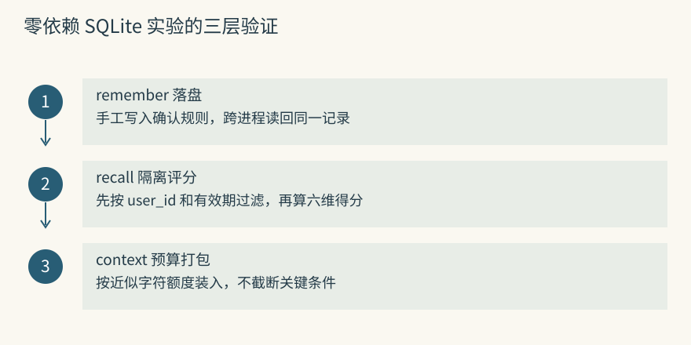
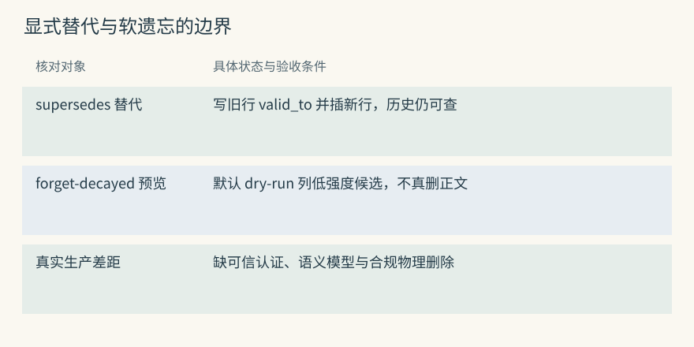

从零实现持久记忆
先做一个不接大模型的最小记忆实验
前面聊了三章概念，这一章我们直接动手跑代码——而且彻底剥离大模型 API，只用 Python 标准库 + SQLite。
为什么要先去掉大模型？因为一上来就接 LLM 抽取、远程 Embedding 和云向量库，一旦“搜不到”，你根本分不清是模型抽歪了、向量没对齐、网络超时了，还是自己的过滤逻辑写错了。把人工确认过的规程直接写进本地 SQLite，能让你把持久化、用户隔离、版本替代、Token 预算、软遗忘这五个核心控制点看得清清楚楚。
从仓库根目录打开终端，把练习库建在临时目录里跑一遍（代码见 mini_memory.py）：
practice=$(mktemp -d)
python3 examples/mini_memory.py --db "$practice/dev.sqlite" remember \
"payment-gateway 发布前必须核对 idempotency_key 覆盖重试窗口" \
--user linyuan --kind procedural --source release-14
python3 examples/mini_memory.py --db "$practice/dev.sqlite" recall \
"payment-gateway 幂等键" --user linyuan
python3 examples/mini_memory.py --db "$practice/dev.sqlite" recall \
"payment-gateway 幂等键" --user chenming跑完立刻能验证两件事：
- 跨进程持久化：第一条命令写完就退出进程，返回 12 位随机 ID；第二条命令起了全新 Python 进程，依然稳稳读回正文和
source: "release-14"； - 用户范围隔离：第三条命令换同事
chenming来查，直接返回空列表[]——哪怕查询词一模一样，也碰不到linyuan的数据。
提醒一句：命令行里的
--user只是教学演示的过滤参数，谁都能在终端随便填。放到生产环境里，user_id必须由服务端鉴权会话得出，绝不能让客户端或模型自己填！
源码与边界：最小实现和 Mem0 / Graphiti 差在哪（选读）

对照 Mem0：最接近的是 infer=False 直存路径
Mem0 的 add(..., infer=False) 同样跳过 LLM 事实抽取，直接把审核好的文本存进去，但它依然依赖配置好的 embedding 模型和向量后端，并不是零依赖。另外，Mem0 的状态分散在向量库和 SQLite 历史表里，备份或排障时不能只盯着一个文件看。
对照 Graphiti：从 Episode 到图对象链路更长
Graphiti 的 add_episode() 即使只喂一条规程，也会调 LLM 抽实体、做消歧、算向量、写图数据库，把信息拆成 Episode、EntityNode、EntityEdge 三个互联对象。验证落盘时不能只看表里有没有一行文字，还得核对端点 UUID 和 episodes 引用连对了没有。
打开 SQLite，看看磁盘里到底存了什么
MemoryStore.__init__() 开启了 WAL 模式，并建了一张带复合索引 (user_id, valid_to, created_at) 的 memories 表。直接用几行 Python 查库，不经过任何检索打分：
python3 - "$practice/dev.sqlite" <<'PY'
import sqlite3, sys
with sqlite3.connect(sys.argv[1]) as conn:
for row in conn.execute("SELECT user_id, kind, text, source FROM memories ORDER BY created_at"):
print(row)
PY养成这个习惯非常管用：以后排障时，先直接查底层存储确认数据在不在、范围对不对，再去怀疑检索公式。库里都没写进去，调一万遍权重也没用。
相关性分数到底是怎么算出来的
打开 mini_memory.py 的 recall()，看它的两步控制流：
- 先硬过滤：SQL
WHERE user_id = ? AND valid_from <= ? AND (valid_to IS NULL OR ? < valid_to)先把无权查看和不在有效期的记录直接挡在门外； - 再算六维加权分：
- 词重叠
lexical（权重0.42）：英文按词切，中文拆成单字 + 相邻双字； - 256 桶哈希词袋余弦
semantic（权重0.28）：用blake2b把词映射到 256 个桶算余弦； - 新近度
recency（权重0.10）：30 天指数衰减； - 重要度
importance（0.10）、置信度confidence（0.07）、访问频次frequency（0.03，带上限对数）。
- 词重叠
注意这里特意暴露了一个“诚实的局限”：虽然输出 JSON 里字段名叫 semantic，但它底层是 256 桶哈希词袋，根本没有接入真正的语义向量模型——不同词可能撞进同一个桶，同义词（比如“幂等键”和“防重复扣款标识”）如果不共字，分数就会掉下来。而且只要 importance 或 recency 足够高，字面毫不相关的记录也可能混出超过 0.05 阈值的分数。自己写完一遍，你就能一眼识破很多“玩具记忆库”的底牌。
用显式替代（supersedes）更新长期偏好，同时保住历史
现在林远的偏好变了：以前改配置前要求先给 diff，现在改成直接提 PR 附变更说明。最小程序不会自作聪明猜冲突，而是由调用者显式传入旧记录 ID：
old_pref=$(python3 examples/mini_memory.py --db "$practice/dev.sqlite" remember \
"林远要求改配置前先在终端展示 diff" --user linyuan --kind profile)
python3 examples/mini_memory.py --db "$practice/dev.sqlite" remember \
"林远要求改配置直接提 PR 并附变更说明" --user linyuan --kind profile \
--supersedes "$old_pref"
python3 examples/mini_memory.py --db "$practice/dev.sqlite" recall \
"改配置" --user linyuan进数据库看看发生了什么：在同一个 SQLite 事务里，旧记录的 valid_to 被设为当前时间戳，新记录的 valid_from 也设为同一时刻且 supersedes 指向旧 ID。
- 现在查
recall，只会命中新偏好； - 旧记录正文依然留在库里，用 Python API 调
recall(..., as_of=旧时刻)依然能还原历史； - 因为区间是左闭右开
[valid_from, valid_to)，交接那一瞬间精确只落在新记录上，不会出现两条同时有效或一瞬间空白。
不过要注意边界：这个极简实现把“生效时刻”和“写入时刻”绑在了一起，还处理不了“11 月 4 日补录 11 月 1 日的交接”（双时间轴我们留到第 6 章拆透）。
源码与边界：替代与预算在真实项目里的对应位置（选读）

Mem0：普通 add() 没有 supersedes 参数
别把这里的手工 supersedes 误以为 Mem0 也自带。Mem0 同步 OSS 写入默认是追加，你在 metadata 里写个 supersedes 字符串，底层并不会自动关闭旧记录——真要替代，得自己维护版本视图或显式调 update()。
Graphiti：替代发生在语义与时间解析里
Graphiti 靠模型判断新旧边矛盾后自动填旧边的 invalid_at，省掉了手工传旧 ID 的麻烦，但代价是模型可能误判（比如把“本周演示只跑 dry-run”误判成替代长期发布规程），所以必须配套正反例测试。
把搜索结果装进有限上下文预算
检索返回的 JSON 不能一股脑全扔给大模型，必须按预算打包：
python3 examples/mini_memory.py --db "$practice/dev.sqlite" context \
"payment-gateway 发布" --user linyuan --budget 40
python3 examples/mini_memory.py --db "$practice/dev.sqlite" context \
"payment-gateway 发布" --user linyuan --budget 1看 mini_memory.py 里的 context() 实现，有三个细节非常值得拍下来留念：
- 整条取舍，不腰斩句子：先调
recall(limit=20)拿候选，按顺序能塞下整条就装，太长塞不下就跳过看下一条短的，防止一刀把“不要真发版”里的“不要”切掉； - 近似预算不是精准 Tokenizer：代码里粗略按
budget * 4个字符算，而且没把标题行和换行算进去；生产环境必须拿目标模型的真实 tokenizer 对“完整拼接后的文本（含标签和出处）”算总长； - 特意留下的“强化错位”示范：
context()调recall()时默认会给返回的所有候选加access_count + 1——哪怕排第一的那条长记录因为超预算根本没装进 Prompt，它的访问计数也涨了！这正好提醒你：生产里必须把“搜到了（selected）”“装进去了（packed）”“模型真用了（used）”和“任务成功了（outcome）”彻底拆开记。
软遗忘：先 dry-run 预览，而且绝不是物理删除
最后跑一下衰减遗忘命令：
python3 examples/mini_memory.py --db "$practice/dev.sqlite" forget-decayed --user linyuan
python3 examples/mini_memory.py --db "$practice/dev.sqlite" forget-decayed --user linyuan --apply默认不带 --apply 时只返回低强度候选 ID 列表，数据库纹丝不动；加上 --apply 后也只是给旧行填上 valid_to，让它退出当前默认检索，正文仍然好好躺在 SQLite 里。所以软遗忘只管降噪，用户如果提出隐私删号请求，必须做真正的物理清除。
实现笔记：跑通自带测试与刻意省略的生产边界（选读）
跑一遍仓库自带的单元测试
仓库的 examples/test_mini_memory.py 已经覆盖了用户隔离、事务回滚、左闭右开边界、六维公式、预算裁剪、软遗忘预览和 CLI 异常处理，直接跑：
python3 -m unittest discover -s examples -v这 300 行代码刻意没做什么
保持简单才能看清骨架。上线前，下面每一项省略都需要你按需替换或补齐：
- 没有真实语义向量与分词：高并发或大库下全量扫用户记录会变慢，应换 FTS5 / 向量索引与兼容的 Embedding 模型；
- 没有自动抽取与冲突判别：目前靠调用方提供干净文本和
supersedesID； - 没有可信鉴权与加密：
user_id必须来自服务端认证，而不是 CLI 或模型入参； - 没有合规物理删除与多副本清理：WAL 文件、备份、日志里的隐私正文都需要独立治理。
但正因为它足够干净，它非常适合当你的 Baseline（基线）：以后每想引入一个复杂框架，先问问它在这套 300 行基线解决不了的哪道具体失败题上，到底带来了多少净收益。
动手检查
不修改数据库，分别把 context 的 --budget 设为 1、40、150，观察输出变化；如果某条记录没出现在最终文本里，你会按什么顺序排查？调试时连续调 recall 为什么会让分数偷偷变高，怎么关掉它？
答案提示：按“SQLite 表里存没存（查表）→ recall 过没过用户/时间过滤和 0.05 门槛 → context 是不是因为单条太长被跳过”三层定位。连续调 recall 分数变高是因为默认 reinforce=True 增加了 access_count；做调试或消融实验时，在 Python API 里传 reinforce=False 即可冻结状态。

项目对照速查（选读）
本章对照结论
mini_memory.py 的控制点 |
真实开源项目里的对应机制 | 迈向生产时必须补齐的验收 |
|---|---|---|
SQLite 落盘 + WHERE user_id 过滤 |
Hippo、MCP、Basic、TencentDB standalone | 服务端鉴权、并发锁、备份恢复与多索引一致 |
| 词重叠 + 256 桶哈希词袋 | Mem0、Graphiti、MCP 的全文/向量检索 | 中文分词、模型版本绑定与候选池边界 |
调用方手工传 supersedes |
Graphiti 关系解析 / 外层版本表 / Git 修订 | 单次例外不能误关长期规程，补齐双时间 |
| 近似字符预算整条打包 | 宿主统一组装器 | 真实模型 tokenizer 计数与成组证据保护 |
召回即加 access_count |
Hippo 强化、MemoryOS 热度 | 拆开 selected / packed / used / outcome |
forget-decayed 默认预览 + 写 valid_to |
Hippo、MCP 生命周期治理 | 低频高危保护项、恢复窗口与隐私物理删除 |
| 人工提供干净正文 | Mem0 / Graphiti 自动 LLM 提取 | 条件保真检查、敏感脱敏与模型超时重试 |